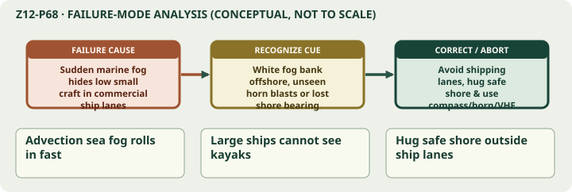

Z12-P68 · Extreme environments · New manuscript
Recognize sea-fog disorientation, shipping lanes and low-visibility vessel collision risks
Prevent small craft from getting lost offshore or run down by large commercial vessels in sudden coastal or lake fog.
When it applies · Kayaks, canoes and small powerboats on coastal waters, harbors, estuaries and Great Lakes.
Equipment · Marine compass, waterproof chart, sound-producing horn/whistle, radar reflector/bright deck colors and VHF radio.

Actions
- Stay completely outside marked commercial shipping channels, ferry tracks and harbor fairways whenever fog threatens—large ships cannot stop quickly, cannot see low kayaks on radar and travel silently until dangerously close.[N07, X05, X06]
- Before crossing any open bay when fog may roll in, take a verified magnetic compass course to shore and keep a loud horn/whistle ready to sound navigation fog warnings per maritime rules.[N07, N08, X05]
- Head immediately to the nearest safe shoreline or hug shallow non-shipping edges the moment a low white marine fog bank appears offshore—do not gamble on beating advection fog across wide open water.[N07, X06]
Failure recognition · Paddling across a busy harbor entrance as coastal fog rolls in without a compass bearing, radar reflector or horn.[N07, X05]
Verify · Confirm compass heading to safe shore, bright visibility gear, working whistle/horn and clear separation from commercial shipping lanes.[N07, N08, X05, ED]
Stop or change course · Dense zero-visibility sea fog ends open-water crossings immediately—land safely on nearest dry shore or hold clear of all traffic lanes and monitor VHF 16.[N07, X05]
Evidence and editorial notes
- N07 · NWS · Fog Safety (current web edition)
- Section: Fog Safety > Visibility Loss and Travel Hazards · Conditions: Dense fog, valley mist, sea fog and blowing-snow whiteout
Support: Fog and whiteout collapse visual landmarks and depth perception rapidly, causing disorientation and unintentional terrain/traffic hazards; halt exposed travel early and rely on verified checkpoints or stay put.
Limitations: Compass bearings alone cannot reveal hidden cliffs, thin ice or drop-offs in zero visibility. · Conflicting evidence: Aligns with B014-P11 whiteout guidance.
Editorial note: Supports whiteout/fog stop thresholds and short-leg navigation boundaries. · Specialist reviewer: Meteorology and search and rescue
Primary source · checked 2026-11-24 - N08 · NOAA NCEI · Magnetic Declination (current web edition)
- Section: NOAA Magnetic Declination > definition and true-bearing conversion · Conditions: Using magnetic baseplate compasses near metal, electronics or iron-rich rock
Support: Declination is between true and magnetic north and varies by location and time. Grid convergence is separate. A device may already apply a correction.
Limitations: NOAA definition does not establish site-specific interference distances or diagnosis of magnetic anomalies. · Conflicting evidence: Aligns with B014-P13 and B014-P14.
Editorial note: Grounds declination conversion, metal-clearance and magnetic-anomaly cards. · Specialist reviewer: Navigation and geophysics safety
Primary source · checked 2026-11-24 - X05 · US Coast Guard · Boating Safety Resource Center (current web edition)
- Section: Boating Safety > Float Plans, VHF-DSC, Weather and Abandon-Ship Limits · Conditions: Inland large lakes, coastal waters and maritime travel
Support: File a float plan, monitor marine weather and VHF Channel 16/DSC where equipped, stay with a swamped buoyant hull when safer than swimming to distant shore and maintain visual/electronic distress signals.
Limitations: Open-water craft operations require vessel-specific seamanship beyond general survival cards. · Conflicting evidence: None; aligns with NOAA-MARINE and NOAA-SARSAT.
Editorial note: Anchors maritime communication, hull-stay and distress cards in Z12. · Specialist reviewer: Maritime safety and USCG-aligned review
Primary source · checked 2026-11-24 - X06 · NOAA NWS · Marine Weather Services (current web edition)
- Section: Marine Weather Services > Small Craft Advisories, Gale Warnings and Sea State · Conditions: Coastal, Great Lakes and open-water marine zones
Support: Marine forecasts issue Small Craft Advisories, Gale, Storm and Hazardous Seas Warnings; wind opposing tide or shallow shoals steepens breaking waves dramatically faster than inland forecasts indicate.
Limitations: Local fetch and headland funneling can exceed regional zone forecasts. · Conflicting evidence: None; integrates with NOAA-NWR marine channels.
Editorial note: Guides marine weather thresholds and coastal-craft abort cards in Z12. · Specialist reviewer: Marine meteorology and maritime safety
Primary source · checked 2026-11-24
Source lineage · NWS fog safety and NOAA marine weather; new manuscript · Classification · New manuscript.